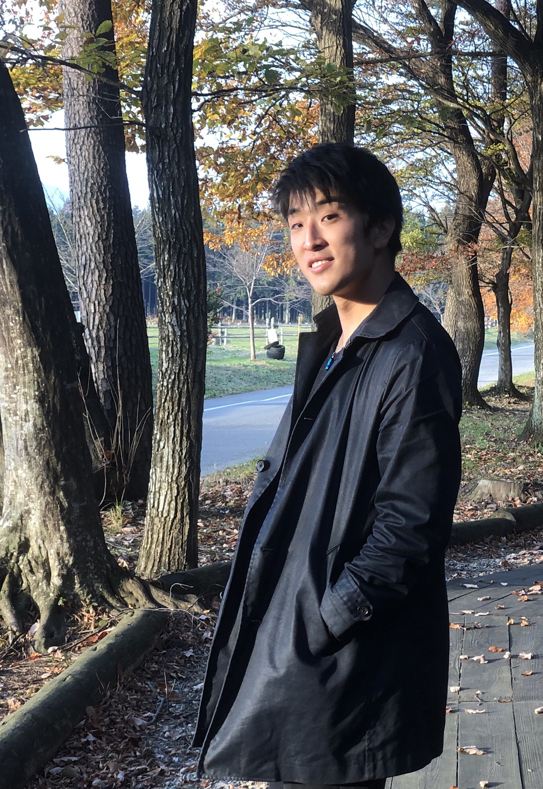

所属
-
筑波大学大学 情報学郡情報科学類
知能情報メディア専攻 学士4年 - インタラクティブプログラミング研究室(IPLAB) UBIQUITOUSチーム
学会
- ACM 学生会員
連絡先
研究内容
-
表計算ソフトにおける空中ハンドジェスチャを用いたインタラクションの拡張
-
磁気センサ付き高機能パッシブRFIDタグを利用した顔タッチ位置識別
学内活動
-
筑波大学スキンダイビングサークル海洋研究会
会長，2017年10月〜2018年10月
課外活動
- 2020東京オリンピック・パラリンピックボランティア
-
株式会社ビッグツリーテクノロジー&コンサルティング
長期インターンシップ，2019年8月〜
資格
- CG-ARTS CGエンジニア検定ベーシック，2017年12月
奨学金
略歴
- 2013年(平成25年) 4月 青稜高等学校 入学
- 2016年(平成28年) 3月 青稜高等学校 卒業
- 2016年(平成28年) 4月 筑波大学 情報学群 情報科学類 入学